TeoriBoost · alle hovedskærme
Mobile-first redesign med ét komponentsystem: hvide kort med tryk-kant, chunky knapper, logoets gule som primærfarve, klare signalfarver og castet med en rolle hver. Fire faner: Lær · Øv · Prøve · Min bil.
A · Startside og brugerintro
Første møde skal føles som et spil, ikke en formular. Castet byder velkommen, tre korte spørgsmål laver en personlig plan, og eleven har svaret på sit første spørgsmål inden for 60 sekunder.

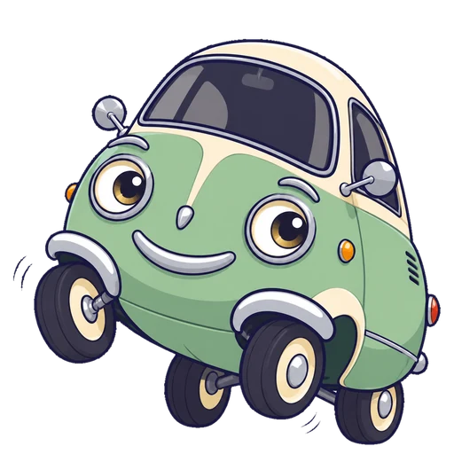
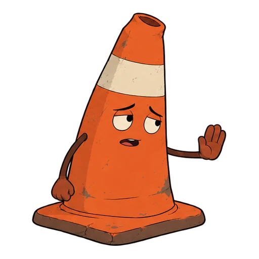
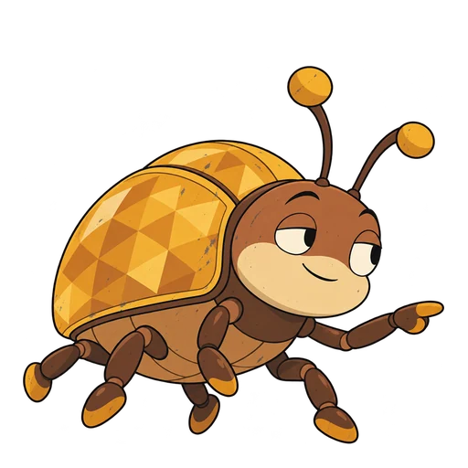

Med et smil.
5 minutter om dagen. Rigtige prøvesituationer. Et cast, der heppe på dig, og en bil, du bygger op, mens du lærer.
Ingen konto nødvendig for at starte
Du kan altid ændre det. Ingen straf, hvis du springer en dag over.
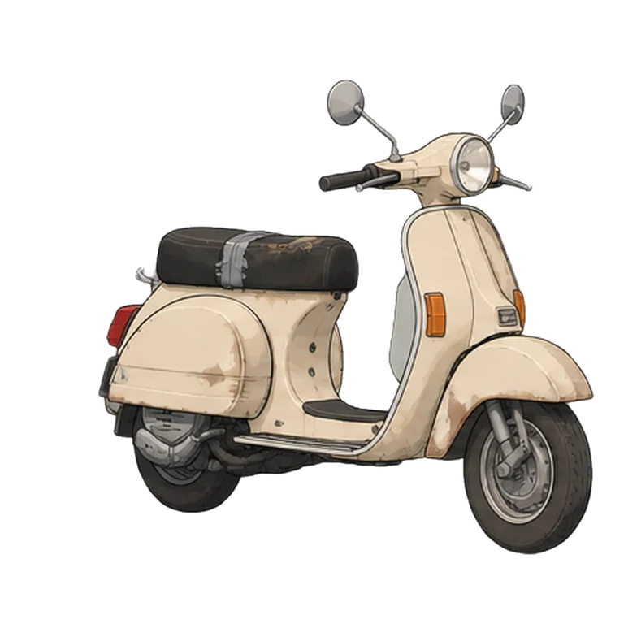
Byg den op med lak, fælge og spoiler, eller spar op til en rigtig bil.
B · Lær
Læringsstien er hjemmet: én næste handling, en sti man kan se sig selv rykke frem på, og gentagelser når de er klar. Atlas ligger som "Alle emner" i toppen af stien.
Indstil først sæde og ryglæn, så pedaler og rat kan betjenes uden at strække kroppen. Indstil derefter spejlene fra den færdige siddestilling.
Næsten!
Indstilling og udsyn sidder nu. Den kommer tilbage om 2 dage.
C · Øv og Prøve
"Øv" samler alt det, der før lå spredt: gentagelser, korte missioner og de tre spil. "Prøve" er den officielle-format-træning med Dæk som rolig træner.
Det er appens øvebedømmelse, ikke en garanti for den rigtige prøve.
D · Min bil, Atlas og Profil
Min bil er belønningen. Atlas ("Alle emner") og Profil er rolige oversigter uden konkurrence om opmærksomheden.
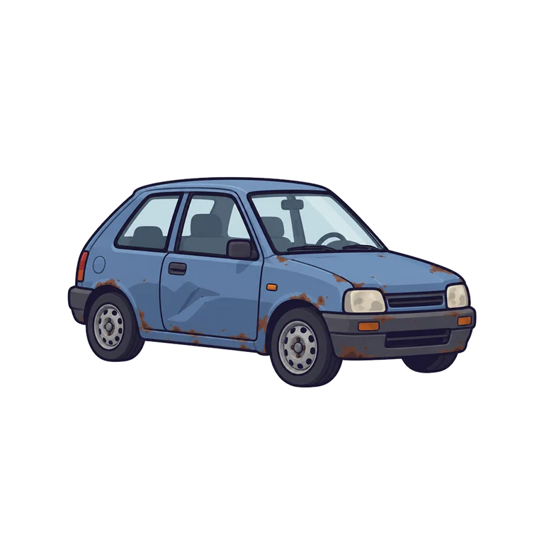
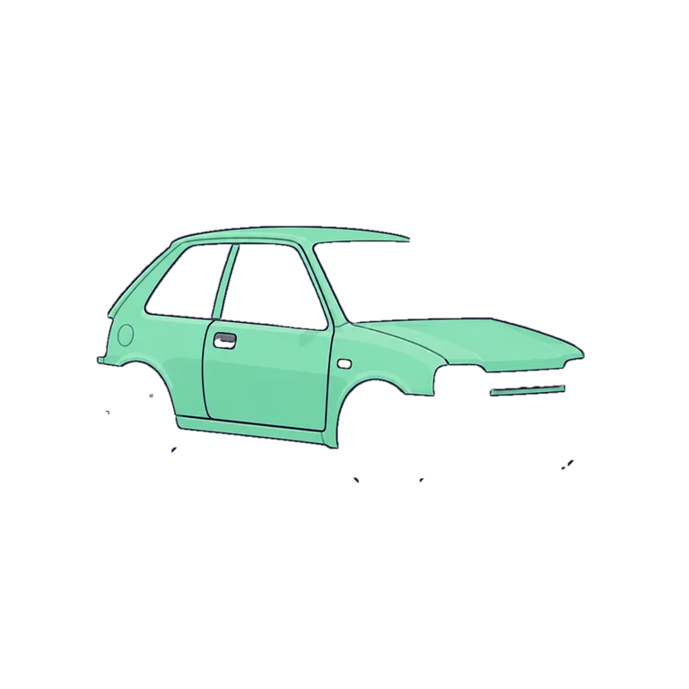
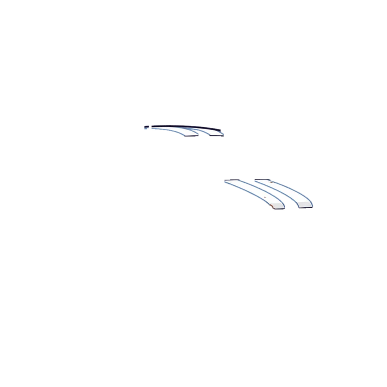
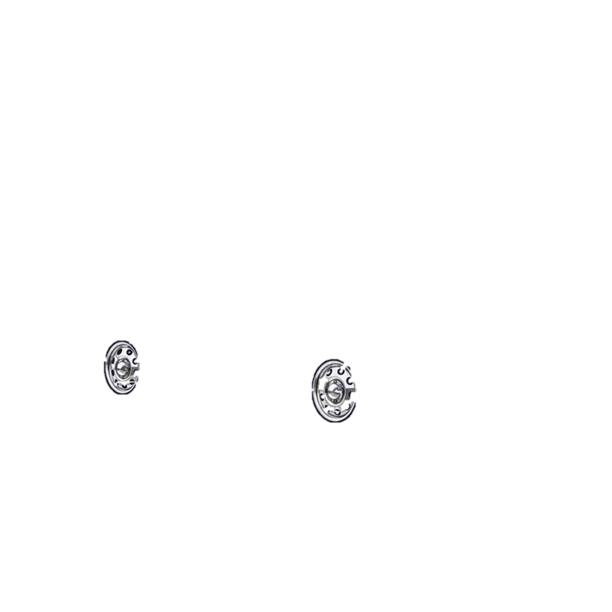
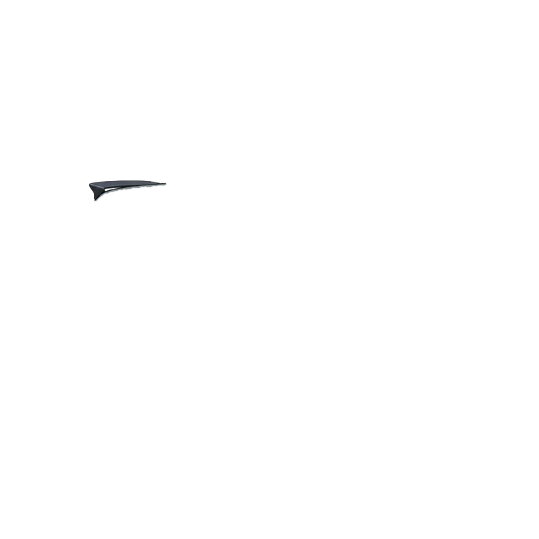
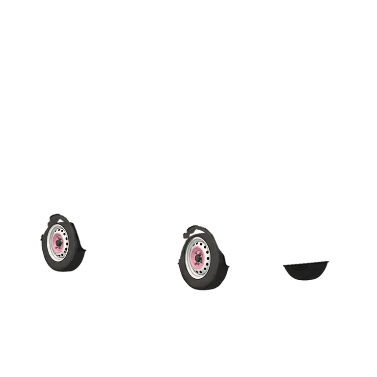
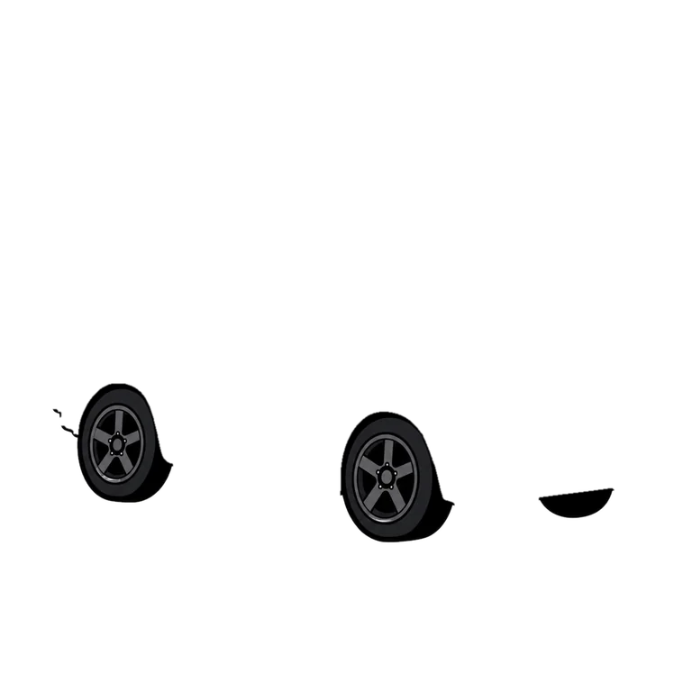